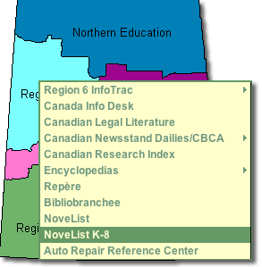
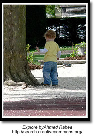

Information literacy
EbscoHost

Novelist K - 8  NoveList K-8 contains information on fiction books for all K-8 grade levels and includes picture books, children's "chapter" books and young adult titles. Updated monthly, NoveList K-8 is your starting place for learning about the books that you and your students need and will want to read.
NoveList K-8 contains information on fiction books for all K-8 grade levels and includes picture books, children's "chapter" books and young adult titles. Updated monthly, NoveList K-8 is your starting place for learning about the books that you and your students need and will want to read.
Novelist  NoveList is a fiction database that provides subject heading access, reviews, annotations, and much more for over 120,000 fiction titles. It also includes Author Read-alikes, Book Discussion Guides, BookTalks, and Feature Articles.
NoveList is a fiction database that provides subject heading access, reviews, annotations, and much more for over 120,000 fiction titles. It also includes Author Read-alikes, Book Discussion Guides, BookTalks, and Feature Articles.
- Novelist Tutorial
- Novelist for Young Readers : a Slide Show Guide for Teachers (ppt)
- EBSCOHost Provides a wonderful page full of support materials, lesson plans and help sheets.
Automobile Repair Reference Center (ARRC)
The Auto Repair Reference Center™ database includes automotive repair information supplied by Point 5 Technologies, Inc., under license from Nichols Publishing, the former publisher of Chilton® Information and information from Delphi Integrated Service Solutions. Auto Repair Reference Center contains information on most manufacturers of domestic and imported vehicles.
- Online Tutorial (Flash)
- Help Sheet (doc)
For Teachers:
Computer Source
Computer Source provides researchers with the latest information and current trends in high technology. This database offers full text for nearly 300 publications and indexing and abstracts for nearly 450 publications.
ERIC
ERIC, the Educational Resource Information Center, contains more than 2,200 digests along with references for additional information and citations and abstracts from over 1,000 educational and education-related journals.
Professional Development Collection
Designed for professional educators, this database provides a highly specialized collection of 520 high quality education journals, including nearly 350 peer-reviewed titles. This database also contains more than 200 educational reports. Professional Development Collection is the most comprehensive collection of full text education journals in the world.
Library, Information Science & Technology Abstracts
Library, Information Science & Technology Abstract (LISTA) indexes more than 600 periodicals, plus books, research reports and proceedings. Subject coverage includes librarianship, classification, cataloging, bibliometrics, online information retrieval, information management and more. Coverage in the database extends back as far as the mid-1960s.
Infotrac
Infotrac is a company that creates databases and sells access to the information in them. (A database is an organized, searchable collection of information.) If you are a Living Sky School Division student, you can access Infotrac databases at school. You can access these databases from home via your Saskatchewan Regional Library with your library barcode number and a pin number.
- The information in these databases comes from credible sources that have been fact-checked.
- Most of the Infotrac databases are indexed, which means they are organized so you can do subject searches.
- You can also do keyword and relevance searches in many of the databases.
 HOT TECH TIP
HOT TECH TIP
When you see the InfoMark® icon on your search results page, this means that you can bookmark the page for future reference, or add it to a list of links on a Web page, blog or wiki page. InfoMarks are ideal for creating reading lists, course reserves, current awareness topic sites, links to periodical or newspaper sources, online/distance learning courses, bibliographies, lesson plans and much more! For more information see the Infomarks web site.
Saskatchewan Multitype Libraries provides databases for all Saskatchewan students:
- Databases for Elementary Students
- Databases for Middle Years Students
- Databases for High School Students
Onine Databases
Finding the treasures in the online databases:

A series of seven tutorials to take you through the databases subscribed to by the Saskatchewan Ministry of Education.
l
j
j
Popular vs Scholary Resources
| Popular vs Scholarly Resources |  |
Information sources come in a variety of genres, each marked by specific conventions and target audiences. Magazines and journals are specific examples of popular and scholarly information sources. An online activity at Research 101 reviews the most important characteristics of these publication types including: Who reads them? Who writes them? What's in them? What are some examples of each?
Magazine, Newspaper, Journal: How are they different? Play the minute module, "What's a Journal' to understand the difference between them.
Distinguishing Scholarly Journals from Other Periodicals provides definitions and examples of four different types of periodicals; Scholarly, Substantive News/General Interest/ Popular and Sensational.
Primary and Secondary Resources
Identifying Primary and Secondary Sources

Primary sources are original, uninterpreted information.

Secondary sources interpret, analyze or summarize.
What is a Primary Source: Explanations and Examples
- What is a primary source? Examples of primary and secondary resources
- Primary and secondary sources: Follow the "click here to learn more about primary resources" to view and participate in a short flash activity on how to identify primary resources.
- This online activity helps you to idenify if a source is primary or secondary
- Canadian Primary Sources: an excellent link from Alberta Education providing overviews, lessons, 'how to read' different primary sources and primary sources links.
- Defining Primary and Secondary Sources: from Collections Canada
- Making History Now: Identifying Primary and Secondary Sources in Canadian History OR How do I know its True? Lesson from the Scarborough Historical Museum
- Primary Sources - This lesson introduces students to primary sources -- what they are, their great variety, and how they can be analyzed. The lesson begins with an activity that helps students understand the historical record. Students then learn techniques for analyzing primary sources. Finally, students apply these techniques to analyze documents about slavery in the United States
Lesson Plans
An Early Canadian Photo Album: A teaching strategy for use with Images Canada Website.
Resources:
Canada in the Making: Primary and Secondary Sources in Government Documents
The Computer Catalog and the Dewey Decimal System

The computer catalog provides access to the library's collection of books, video and audio recording, magazines, and even to web sites. Most school libraries use the Dewey Decimal system to organize materials on library shelves.
What is the Dewey Decimal System?
Some years ago Mr. Melvil Dewey devised a system of classifying books which is used in many libraries. He choose certain main subjects and numbers, so that all nonfiction books on the same subject would be together on the shelf.
The Story About the Dewey Decimal System of Classification , explains the 10 different numbers used to classify items to be placed on library shelves. At this site you will also find ideas for lesson plans and online quizzes to test your knowledge of the Dewey Decimal Classfication System.
How the Dewey Decimal System Works: shows how the Dewey Decimal system arranges items on the shelves from the general to the specific. Each classification number is broken down into more specific classfications.
"Do we" really know Dewey? is a step-by-step tutorial for grades 4 - 8 about the Dewey Decimal system.
Finding Information
In this stage of the problem-solving process the researcher locates the resources that contain the answers to the research questions posed during the preparation or planning stage. However, in a technology and information-rich world the temptation is to accept the first three hits on google and not explore the wealth of available resources.
Teachers tend to overestimate students ability to locate appropriate resources often intimidated by their apparent ease and understanding of how to use the technology.
It is important that at this stage teachers are aware of the types of resources that tend to appear in the first three hits of a google search -- e.g. Wikipedia and be aware of what they are and how they are created. Students must use sophisticated analytical and critical thinking skills to structure their search and to select relevant, authoritative and credible resources.
As David Warlick says,
So one of the oldies requested was “Finding It on the Net: Being a Digital Detective.” The last time I’d taught that one, I was still introducing folks to Google and boolean searching. But today, it involves so much more. Not just finding the evidence, as a digital detective, but also witnesses. So I included a discussion about blogs and wikis, and using Technorati and Google Blog search to locate and select experts in a given field, and to use BlogPulse to map the frequency of specific conversations. We also looked at some examples of using wikis to tap into the collective knowledge of communities.
When it came to the digital detective seeking evidence, I did an old demo, illustrating a process-approach to conducting searches. I call it SEARCH, which is an acronym for the process. We also discussed the Wikipedia and other social content sites and their effectiveness as a reliable source. This discussion, alas, continues.
Finally, I demo’ed RSS, as a tool for not just finding information, but for training information to find you. So much more to finding information today.
In the finding stage of the problem-solving process graphic organizers can be used to
| determine key words for searching |
Spider Map |
| generate ideas and key words |
Clustering |
Graphic Organizers
Students who use concept maps in their search process were more likely to make metagcognitive judgments that lead to successful searching. (Carol Gordon)
 Graphic organizers are important tools to help students see how key ideas connect with each other and to organize data into categories.
Graphic organizers are important tools to help students see how key ideas connect with each other and to organize data into categories.
A graphic organizer or mindmap is usually a one-page
form with blank areas for the student to fill in with related ideas and information. Some organizers are very specific; others can be used with many topics. Some of the organizers allow for the information to be written or drawn, allowing students in all grade to use them.
Miguel MGuhlin noted in a blog post how graphic organizers can be used in all stages of finding using and sharing information.
In the preparing phase of the problem-solving or research process graphic organizers can be used to:
|
plan out the problem-solving or research process |
Chain of events Map |
|
idenify prolbem causes and interrelationships between them |
Fishbone Mapping |
| show interactions between events | Cycle |
| explore a topic and identify main ideas and details | Spider Map |
| to identify a problem and consider multiple solutions and possible results |
Problem/Solutio |
Teaching Tip: Jim Burke on using graphic organizers
Get more graphic organizers from EdHelper.com
Technology-based tools for graphic organizers and mind-mapping:
There are many computer tools that allow students to create concept and mind maps. Inspiration and Kidspiration are two of the better known tools. As well, there is a growing number of free open-source and web-based tools available. These tools run on your web browser therefore there is no need to download any additional software.
A very simple tool, ReadWriteThink Webbing Tool l, is perfect to engage younger students (grades 3 - 5) in the mind-mapping and webbing process.
Bubbl.us is a simple and free web application that lets you brainstorm online.
 Gliffy is an online, collaborative mindmapping tool that is simple to use. Features such as copy,paste and undo are all a part of this advanced web application.
Gliffy is an online, collaborative mindmapping tool that is simple to use. Features such as copy,paste and undo are all a part of this advanced web application.
Mindomo is also a free web-base mind mapping tool offering the capabilities of desktop mind mapping software in a Web browser - with no complex software to install or maintain. It's also a whole lot of fun to use!
All of these tools allow you to save your work online or to your desktop, share and work collaboratively on a document with others, and post your images to blogs or wikis.
Concept Maps
Concept maps differ from mindmaps in that they have a specific set of criteria which are used to link concepts. They are more rigid in their structure than free flowing mindmaps but are excellent tools for students to see how the information they are collecting links together. Concept maps are graphical tools for organizing and representing knowledge. They include concepts, usually enclosed in circles or boxes of some type, and relationships between concepts indicated by a connecting line linking two concepts. Words on the line, referred to as linking words or linking phrases, specify the relationship between the two concepts. (The Theory Underlying Concept Maps and How to Construct Them )
The attached document (doc), Skill: The Process of Concept Mapping, outlines the steps in creating a concept map for a Native Studies 30 assignment. The following free desktop programs are useful tools for meeting the concept mapping skill of the Saskatchewan Social Science curriculum objectives.

{kind=link}
Freemind allows you to create a mapped image with links to a folding outline.
CMap creates structured linking concept maps.
More about concept maps:
An Introduction to Concept Maps:
- Tips on Making Your Own Concept Maps.
- Kinds of Concept Maps.
- Concept Map Bank.
Concept Maps go to School "We would like to use tools and a methodology that helps children construct knowledge," Tarte said. "Concept maps was the best tool that we found."
Concept Map Wiki - explanation, definitions, types of concept maps, application and reference links - a great resource for everything about concept maps.
Good Questions
The following examples of questions addressing each level are based on Doug Johnson's Good Questions hand-out from his presentation handout, Designing Research Projects that Kids (and Teachers) Love
Level One Question
My research is about a broad topic. I can complete the assignment by using a general reference source such as an encyclopedia.
Example: My research is about the causes of the genocide in Rwanda.
Level Two Question
My research answers a question that helps me narrow the focus of my search. The question may mean that I need to go to various sources to gather enough information to get a reliable answer. The conclusion of the research will ask me to give a supported answer to the question.
Example: Why was Romeo Dallaire unable to inform the world about the genocide in Rwanda?
Level Three Question
My research answers a question of personal relevance. To answer this question I may need to consult not just secondary sources such as magazines, newspapers, books or the Internet, but use primary sources of information such as original surveys, interviews, or source documents.
Example: How did the atrocities of the Rwanda genocide affect Constable xxxx, of North Battleford, during and after his time as a member of the Canadian Peacekeeping forces in Rwanda?
Level Four Question
My research answers a personal question about the topic, and contains information that may be of use to decision-makers as they make policy or distribute funds. The result of my research is a well-supported conclusion that contains a call for action on the part of an organization or government body. There will be a plan to distribute this information.
Example: The Genocide Convention defines genocide as "acts committed with intent to destroy, in whole or in part, a national, ethical, racial or religious group". Since the genocide in Rwanda ethic killings have taken place in Darfur in the Sudan. How might curricular and extra-curricular activities be utilized to motive students at NBCHS to lobby governments to take action and protect global citizens against such evil?
Asking Good Questions
 Questions may be the most powerful technology we have ever created" says Jamie McKenzie, author of Beyond Technology: Questioning, Research and the Information Literate School.
Questions may be the most powerful technology we have ever created" says Jamie McKenzie, author of Beyond Technology: Questioning, Research and the Information Literate School.
In an information and technology rich world it is easy for students to cut and paste the information they find for their fact-based assignments and projects. High School teacher-librarian, Joyce Valenza asks, with basic information so easy to access, shouldn't we now focus our students attention on questions that will challenge them to use information meaningfully - to think, analyze, evaluate and invent?"
Before students can start to ask good questions they need to see it modeled by their teachers. Tips for Teachers: Asking Good Questions, provides some questioning strategies that provoking high-level thinking. Jamie Mackenzie's Questioning Toolkit describes the many different types of questions that can be introduced as early as kindergarten to enable students to have powerful questioning technologies and techniques with them as they arrive in high school.
San Bonito High School's What I Want to Find Out: Questions, describes the difference between 'thin' and 'thick' questions and provides examples of how to turn a thin question into a fat one.
Creating Essential Questions outlines the key components of essential questions
Not All Questions are Created Equal
In his presentation handout, Designing Research Projects that Kids (and Teachers) Love, Doug Johnson outlines four levels of questions.
Questioning Flow (pdf) - a series of questions for middle and high school students to use when reading a selected passage.

Contact Information
Donna DesRoches
Learning Resources Consultant
Living Sky School Division
509 Pioneer Avenue
North Battleford, SK
S9A 4A5
306-937-7904
_________________________